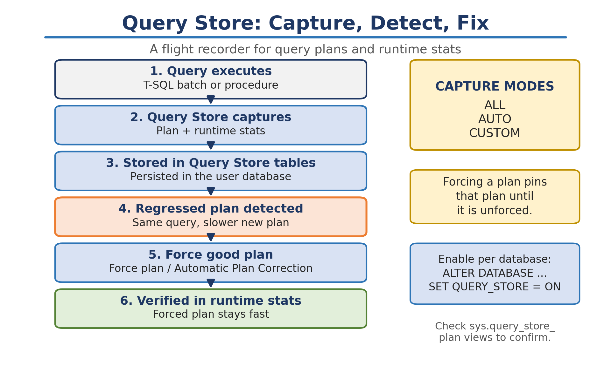

Chapter 11: Monitoring - DMVs, Query Store and Extended Events
Monitoring is how a DBA moves from guessing to evidence. SQL Server exposes live activity through DMVs, historical plan performance through Query Store, and low-overhead tracing through Extended Events. This chapter covers the tools you will reach for first when a server is slow or a query regresses.
In this chapter:
Key learning: Good monitoring combines live DMV checks for what is happening now with Query Store and Extended Events for what changed over time. Learn the small set of DMVs and counters in this chapter, and you can triage most performance problems without Profiler or guesswork.
Q113. What are the key DMVs every DBA should know, and what does each one show?
Answer: Dynamic management views expose live server state. Most DMVs reset when SQL Server restarts, so they describe current or recent activity, not long-term history. The six below cover most day-to-day triage.
SELECT s.session_id, s.login_name, s.host_name, r.command, r.status, r.cpu_time, r.total_elapsed_time
FROM sys.dm_exec_sessions AS s
LEFT JOIN sys.dm_exec_requests AS r ON r.session_id = s.session_id
WHERE s.is_user_process = 1;
SELECT TOP 10 qs.execution_count, qs.total_logical_reads, qs.total_elapsed_time, st.text
FROM sys.dm_exec_query_stats AS qs
CROSS APPLY sys.dm_exec_sql_text(qs.sql_handle) AS st
ORDER BY qs.total_logical_reads DESC;Key learning: The core DMVs show live sessions and requests, cached query history, cumulative waits, and index use and fragmentation so you can find the bottleneck instead of guessing.
Q114. How do you find the currently running expensive queries?
Answer: Join sys.dm_exec_requests to sys.dm_exec_sessions and use sys.dm_exec_sql_text to get the SQL text. Filter out system sessions, then sort by CPU time, logical reads, or elapsed time depending on what expensive means for the incident. Check wait_type and blocking_session_id in the same result, because a slow query is often waiting or blocked rather than consuming CPU.
Look for a small number of sessions with very high CPU, reads, or elapsed time, and check whether one session is blocking several others. For history after the query finishes, use Query Store or sys.dm_exec_query_stats. For a quick readable snapshot during an incident, many DBAs run sp_WhoIsActive instead of writing the join by hand.
SELECT TOP 10 r.session_id, s.login_name, r.status, r.command, r.wait_type, r.blocking_session_id,
r.cpu_time, r.total_elapsed_time, r.logical_reads, t.text
FROM sys.dm_exec_requests AS r
INNER JOIN sys.dm_exec_sessions AS s ON s.session_id = r.session_id
CROSS APPLY sys.dm_exec_sql_text(r.sql_handle) AS t
WHERE r.session_id > 50
ORDER BY r.cpu_time DESC;Key learning: Join live requests to sessions and SQL text and sort by CPU, reads, or elapsed time to find the queries actually consuming resources right now.
Q115. What is Query Store, what does it capture, and which editions support it?
Answer: Query Store is a per-database feature that persists query history so it survives restarts and plan cache clears. It captures query text, execution plans, and runtime statistics aggregated over time intervals, so you can see when a plan changed and how performance moved. Newer versions also capture wait statistics per query, which helps separate CPU, IO, and blocking problems.
It is available in all editions from SQL Server 2016 onward, including Express. It is on by default in Azure SQL Database and for new databases in SQL Server 2022, but in older on-premises versions you must enable it per database. Query Store data lives in the user database itself, so it travels with backups and restores.
SELECT TOP 10 q.query_id, p.plan_id, rs.avg_duration, rs.count_executions, qt.query_sql_text
FROM sys.query_store_query AS q
INNER JOIN sys.query_store_plan AS p ON p.query_id = q.query_id
INNER JOIN sys.query_store_runtime_stats AS rs ON rs.plan_id = p.plan_id
INNER JOIN sys.query_store_query_text AS qt ON qt.query_text_id = q.query_text_id
ORDER BY rs.avg_duration DESC;Key learning: Query Store keeps a persistent history of queries, plans, and runtime stats in the database so you can prove when a plan changed and how performance moved.

Q116. How do forced plans work in Query Store, and how do you detect plan regression?
Answer: Forcing pins a specific plan to a query, so the optimizer must use that plan instead of choosing a new one. Use sys.sp_query_store_force_plan with the query id and plan id of the known good plan, and use sys.sp_query_store_unforce_plan to release it. If a forced plan fails, for example because an index was dropped, the optimizer falls back to normal optimization and the failure is recorded.
Detect regression by comparing runtime statistics for the same query across plans and time intervals in Query Store. In SQL Server Management Studio, the Regressed Queries and Top Resource Consuming Queries reports show queries whose duration, CPU, or reads got worse after a plan change. SQL Server 2017 and later can also use automatic plan correction to force the last known good plan when a regression is detected.
EXEC sys.sp_query_store_force_plan @query_id = 15, @plan_id = 42;
EXEC sys.sp_query_store_unforce_plan @query_id = 15, @plan_id = 42;
SELECT q.query_id, p.plan_id, p.is_forced_plan, rs.avg_duration
FROM sys.query_store_query AS q
INNER JOIN sys.query_store_plan AS p ON p.query_id = q.query_id
INNER JOIN sys.query_store_runtime_stats AS rs ON rs.plan_id = p.plan_id
WHERE p.is_forced_plan = 1;Key learning: Forcing pins a known good plan while you fix the root cause, and Query Store history lets you compare plans over time to confirm a regression before you act.
Q117. How do you configure Query Store, including capture modes, retention, and size limits?
Answer: Configure Query Store with ALTER DATABASE and SET QUERY_STORE. The main settings control whether it collects, what it captures, how long it keeps data, and how large it can grow. Monitor state and size through sys.database_query_store_options, because a full store with cleanup off switches to read-only and stops collecting new data.
ALTER DATABASE SalesDB SET QUERY_STORE = ON
(
OPERATION_MODE = READ_WRITE,
CLEANUP_POLICY = (STALE_QUERY_THRESHOLD_DAYS = 30),
DATA_FLUSH_INTERVAL_SECONDS = 900,
MAX_STORAGE_SIZE_MB = 1024,
INTERVAL_LENGTH_MINUTES = 60,
SIZE_BASED_CLEANUP_MODE = AUTO,
QUERY_CAPTURE_MODE = AUTO,
MAX_PLANS_PER_QUERY = 200
);
SELECT actual_state_desc, desired_state_desc, current_storage_size_mb, max_storage_size_mb
FROM sys.database_query_store_options;Key learning: Size Query Store for your workload, keep capture and retention tight enough to avoid filling the store, and monitor its state so it never silently switches to read-only.
Q118. Why did Extended Events replace SQL Trace and Profiler, and what are the key differences?
Answer: SQL Trace and Profiler are deprecated. Profiler runs a graphical trace with high overhead, a limited event set, and filtering that happens after events are collected. Server-side traces are lighter than Profiler but still carry noticeable overhead and cannot match the range of events Extended Events provides.
Extended Events is lightweight, highly scalable, and built into the engine. It offers many more events, filters events with predicates before they are collected, and writes to flexible targets such as a ring buffer or an event file. It works on Azure SQL Database and Azure SQL Managed Instance, where Profiler does not, and the system_health session runs by default to capture errors and deadlocks.
SELECT name, create_time, total_buffer_size, total_events_fired
FROM sys.dm_xe_sessions;Key learning: Extended Events replaced Profiler because it captures far more detail with far less overhead and filters events before they are collected.
Q119. How do you create an Extended Events session with events, actions, predicates, and targets?
Answer: Create a session with CREATE EVENT SESSION, add one or more events, and start it with ALTER EVENT SESSION STATE = START. An event is something that happens in the engine, such as a completed statement. An action adds context columns to the event, such as SQL text, username, or client host. A predicate is a WHERE clause on the event that filters early, so only matching events are collected.
A target is where the events go. The ring buffer target holds recent events in memory and is good for quick checks, but it is transient and limited in size. The event file target writes to disk, persists across restarts, and is better for longer captures and later analysis with sys.fn_xe_file_target_read_file. Always add a selective predicate and a size limit, and stop the session when you are done.
CREATE EVENT SESSION TrackSlowQueries ON SERVER
ADD EVENT sqlserver.sql_statement_completed
(
ACTION (sqlserver.sql_text, sqlserver.username, sqlserver.client_hostname)
WHERE ([duration] > 1000000)
)
ADD TARGET package0.event_file
(
SET filename = N'C:\XE\SlowQueries.xel', max_file_size = 100
)
WITH (MAX_MEMORY = 4096 KB, EVENT_RETENTION_MODE = ALLOW_SINGLE_EVENT_LOSS, MAX_DISPATCH_LATENCY = 30 SECONDS);
ALTER EVENT SESSION TrackSlowQueries ON SERVER STATE = START;
SELECT CAST(event_data AS XML) AS event_data
FROM sys.fn_xe_file_target_read_file(N'C:\XE\SlowQueries*.xel', NULL, NULL, NULL);Key learning: An Extended Events session is an event plus actions and a predicate that filters early, sent to a ring buffer for quick checks or an event file for lasting analysis.
Q120. What is sp_WhoIsActive, what does it show, and why do DBAs use it?
Answer: sp_WhoIsActive is a free stored procedure written by Adam Machanic. It is not built in, so you install it in the master database and then call it from any database. In one result set it shows session id, login, host, database, status, blocking chain, CPU, reads, writes, elapsed time, wait info, SQL text, and optionally the execution plan and locks.
DBAs use it because it replaces several DMV joins with one readable call during an incident. Parameters control the extra detail, such as @get_plans for plans, @get_locks for lock info, @get_avg_time for average time per request, and @get_full_inner_text for complete SQL text. It can also capture deltas between runs and log results to a table for short-term history.
EXEC sp_WhoIsActive @get_full_inner_text = 1, @get_plans = 1, @get_locks = 1, @get_avg_time = 1;Key learning: sp_WhoIsActive gives a single readable snapshot of who is running, what they are waiting on, and who is blocking whom, which is why DBAs run it first during an incident.
Q121. How do you use wait statistics in sys.dm_os_wait_stats, and when should you clear or baseline them?
Answer: sys.dm_os_wait_stats accumulates waits since the last restart or the last clear, with wait type, task count, total wait time, and maximum wait time. Common waits to know are CXPACKET for parallelism, PAGEIOLATCH_SH for disk reads into memory, LCK_M waits for blocking, WRITELOG for transaction log writes, SOS_SCHEDULER_YIELD for CPU pressure, and ASYNC_NETWORK_IO for clients that are slow to consume results.
Never read the raw totals as a current problem, because they cover the whole uptime. Take snapshots into a table on a schedule and compare deltas over a fixed interval, such as 15 minutes or one hour, and ignore benign idle waits such as SLEEP_TASK and BROKER_EVENTHANDLER. Clearing with DBCC SQLPERF destroys history, so only clear in a controlled baseline window or on a test system, never casually on production.
SELECT TOP 10 wait_type, waiting_tasks_count, wait_time_ms,
wait_time_ms * 1.0 / SUM(wait_time_ms) OVER () * 100 AS pct_of_total
FROM sys.dm_os_wait_stats
WHERE wait_type NOT IN (N'BROKER_EVENTHANDLER', N'SLEEP_TASK', N'WAITFOR')
ORDER BY wait_time_ms DESC;
DBCC SQLPERF ('sys.dm_os_wait_stats', CLEAR);Key learning: Wait stats are cumulative, so capture snapshots and compare deltas over a fixed interval instead of reacting to totals since the last restart.
Q122. How do you find a long-running query that is no longer running?
Answer: The live DMVs only show work that is running right now, so once the query finishes it disappears from sys.dm_exec_requests. Start with Query Store, which keeps runtime statistics in time windows: open the Top Resource Consuming Queries report or query sys.query_store_runtime_stats joined to the query text, filter by the time window when the slowness happened, and sort by total duration. That shows the query, its plans, and whether the plan changed at that time.
If Query Store was off or the window has aged out, use an Extended Events session on sql_statement_completed with a duration filter, or the default system_health session for errors and deadlocks around the same time. As a standing habit, many DBAs log sp_WhoIsActive output to a table every few minutes, which gives a recent history of what ran and how long it took. The answer the interviewer wants is the habit, not the tool: for a past incident you need persisted history, and Query Store is the one that is already there.
-- Slowest queries in a past time window, from Query Store history
SELECT TOP 10 qt.query_sql_text,
rs.avg_duration / 1000 AS AvgDurationMs,
rs.count_executions,
rs.last_execution_time
FROM sys.query_store_query_text AS qt
INNER JOIN sys.query_store_query AS q
ON q.query_text_id = qt.query_text_id
INNER JOIN sys.query_store_plan AS p
ON p.query_id = q.query_id
INNER JOIN sys.query_store_runtime_stats AS rs
ON rs.plan_id = p.plan_id
WHERE rs.last_execution_time >= DATEADD(HOUR, -4, SYSDATETIME())
ORDER BY rs.avg_duration DESC;
-- Capture statements over 5 seconds for next time
CREATE EVENT SESSION LongStatements ON SERVER
ADD EVENT sqlserver.sql_statement_completed
(
WHERE duration > 5000000
)
ADD TARGET package0.event_file
(SET filename = N'C:\XE\LongStatements.xel');Key learning: Live DMVs only show running work, so a finished slow query is found in persisted history: Query Store time windows first, then an Extended Events session or a logged sp_WhoIsActive history.
QueryLab — Self-Hosted SQL Performance Workbench
EXPLAIN visualizer · Index advisor · Slow query dashboard · SQL Server